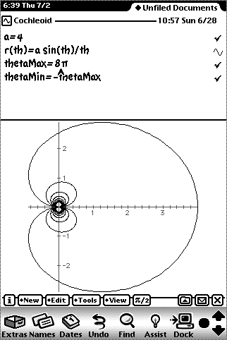
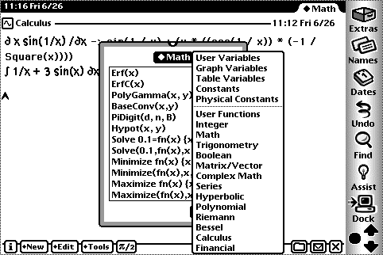
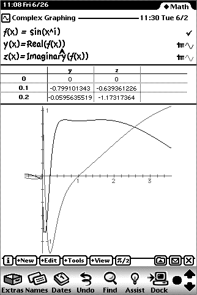
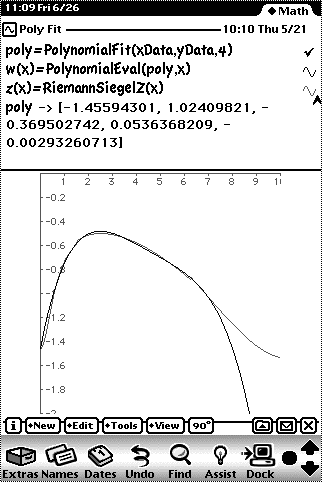
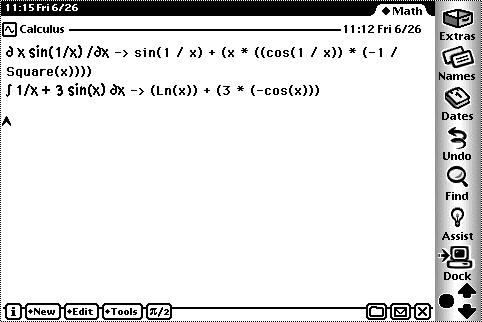
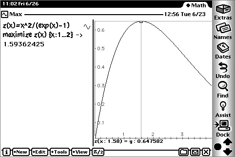
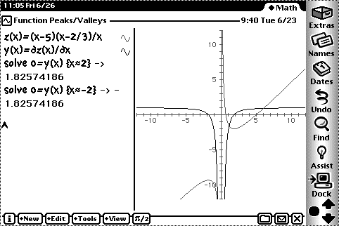
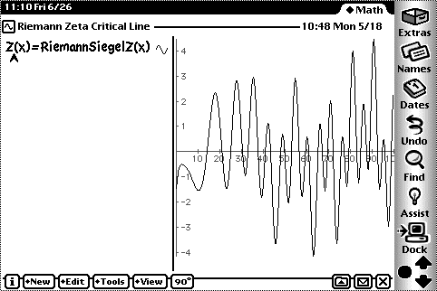
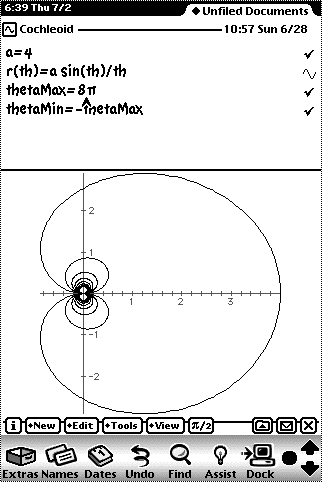

Many categories added

Handles complex math

Fit data to any size polynomial

Take the derivative and integral of any function

Find the maximum of any function

Solve for any equation

Weird functions

Polar graphs
